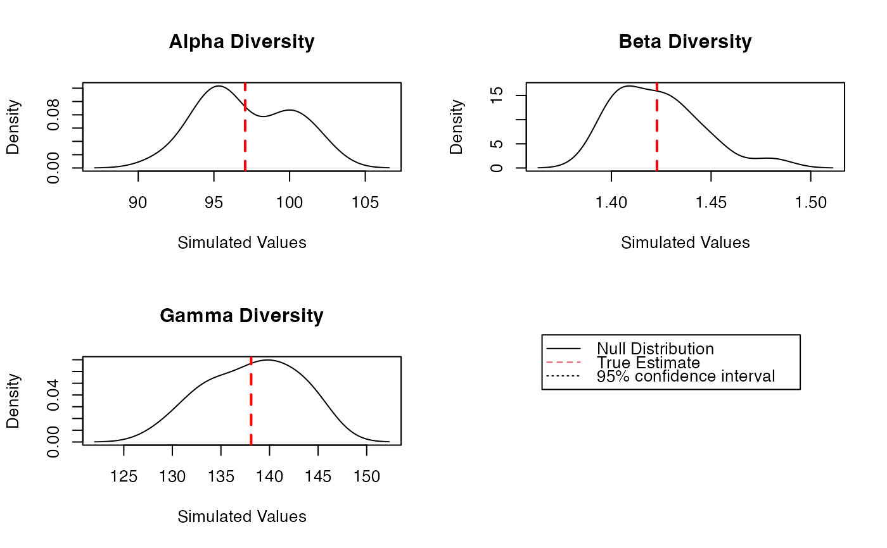

DivEst.RdEstimates diversity of a metacommunity.
DivEst(q = 0, MC, Biased = TRUE, Correction = "Best", Tree = NULL,
Normalize = TRUE, Z = NULL, Simulations = 100,
ShowProgressBar = TRUE, CheckArguments = TRUE)
is.DivEst(x)
# S3 method for DivEst
plot(x, ..., main = NULL, Which = "All",
Quantiles = c(0.025, 0.975), colValue = "red", lwdValue = 2, ltyValue = 2,
colQuantiles = "black", lwdQuantiles = 1, ltyQuantiles = 2)
# S3 method for DivEst
autoplot(object, ..., main = NULL, Which = "All",
labels = NULL, font.label = list(size=11, face="plain"),
Quantiles = c(0.025, 0.975), colValue = "red",
colQuantiles = "black", ltyQuantiles = 2)
# S3 method for DivEst
summary(object, ...)A number: the order of diversity.
A MetaCommunity object.
Logical; if FALSE, a bias correction is appplied.
A string containing one of the possible corrections. The correction must be accepted by DivPart. "Best" is the default value.
An object of class hclust, phylo, phylog or PPtree. The tree must be ultrametric.
If TRUE (default), diversity is not affected by the height of the tree..
If FALSE, diversity is proportional to the height of the tree.
A relatedness matrix, i.e. a square matrix whose terms are all positive, strictly positive on the diagonal. Generally, the matrix is a similarity matrix, i.e. the diagonal terms equal 1 and other terms are between 0 and 1.
The number of simulations to build confidence intervals.
If TRUE (default), a progress bar is shown.
Logical; if TRUE, the function arguments are verified. Should be set to FALSE to save time when the arguments have been checked elsewhere.
An object to be tested or plotted.
The title of the plot.
May be "Alpha", "Beta" or "Gamma" to respectively plot the metacommunity's alpha, beta or gamma diversity. If "All" (default), all three plots are shown.
Vector of labels to be added to multiple plots. "auto" is the same as c("a", "b", "c", "d)".
A list of arguments to customize labels. See ggarrange.
A MCdiversity object to be summarized or plotted.
A vector containing the quantiles of interest.
The color of the line representing the real value on the plot.
The width of the line representing the real value on the plot.
The line type of the line representing the real value on the plot.
The color of the lines representing the quantiles on the plot.
The width of the lines representing the quantiles on the plot.
The line type of the lines representing the quantiles on the plot.
Additional arguments to be passed to the generic methods.
Divest estimates the diversity of the metacommunity and partitions it into alpha and beta components.
If Tree is provided, the phylogenetic diversity is calculated else if Z is not NULL, then similarity-based entropy is calculated.
Bootstrap confidence intervals are calculated by drawing simulated communities from a multinomial distribution following the observed frequencies (Marcon et al, 2012; 2014).
A Divest object which is a DivPart object with an additional item in its list:
A matrix containing the simulated values of alpha, beta and gamma diversity.
Divest objects can be summarized and plotted.
Marcon, E., Herault, B., Baraloto, C. and Lang, G. (2012). The Decomposition of Shannon's Entropy and a Confidence Interval for Beta Diversity. Oikos 121(4): 516-522.
Marcon, E., Scotti, I., Herault, B., Rossi, V. and Lang, G. (2014). Generalization of the partitioning of Shannon diversity. PLOS One 9(3): e90289.
Marcon, E., Herault, B. (2015). Decomposing Phylodiversity. Methods in Ecology and Evolution 6(3): 333-339.
# Load Paracou data (number of trees per species in two 1-ha plot of a tropical forest)
data(Paracou618)
# Estimate Shannon diversity.
Estimation <- DivEst(q = 1, Paracou618.MC, Biased = FALSE, Correction = "UnveilJ",
Simulations = 20)
#>
plot(Estimation)
#> Warning: NAs introduced by coercion
#> Warning: NAs introduced by coercion
#> Warning: NAs introduced by coercion
#> Warning: NAs introduced by coercion
#> Warning: NAs introduced by coercion
#> Warning: NAs introduced by coercion

summary(Estimation)
#> Diversity partitioning of order 1 of MetaCommunity Paracou618.MC
#> with correction: UnveilJ
#> Alpha diversity of communities:
#> P006 P018
#> 83.7268 118.2713
#> Total alpha diversity of the communities:
#> [1] 97.06467
#> Beta diversity of the communities:
#> UnveilJ
#> 1.422843
#> Gamma diversity of the metacommunity:
#> UnveilJ
#> 138.1078
#> Quantiles of simulations (alpha, beta and gamma diversity):
#> 0% 1% 2.5% 5% 10% 25% 50% 75%
#> 90.20934 90.41240 90.71699 91.22465 92.83767 93.37764 96.90848 100.99243
#> 90% 95% 97.5% 99% 100%
#> 102.86664 105.31814 105.35074 105.37031 105.38335
#> 0% 1% 2.5% 5% 10% 25% 50% 75%
#> 1.369170 1.372906 1.378512 1.387854 1.390106 1.404947 1.425192 1.434308
#> 90% 95% 97.5% 99% 100%
#> 1.445359 1.460270 1.487505 1.503846 1.514740
#> 0% 1% 2.5% 5% 10% 25% 50% 75%
#> 130.0075 130.1129 130.2709 130.5344 132.9592 134.7533 137.2941 141.5093
#> 90% 95% 97.5% 99% 100%
#> 144.7793 147.9091 147.9938 148.0446 148.0785